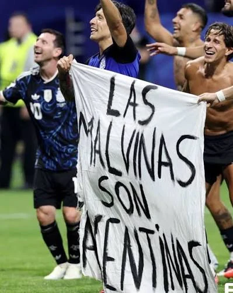
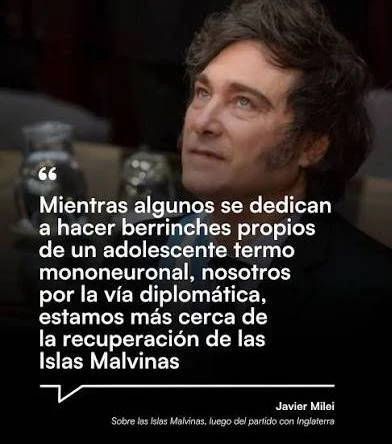

那面打破沉默的旗帜：球场上的一个举动如何把马尔维纳斯群岛推到世界中心，以及米莱令人尴尬的反应
利桑德罗·马丁内斯和洛塞尔索在亚特兰大的举动迫使世界谈论马尔维纳斯群岛。阿根廷在决赛中不敌西班牙，但那面旗帜依然鲜活：这是主权事业的一场教育性胜利。

马尔维纳斯 — GLOBALpatagonia 报道
这不仅仅是对国际足联规则的一次违规。这是一次穿越大西洋的历史心跳，唤醒了几十年来一直视而不见的全球观众。当利桑德罗·马丁内斯和乔瓦尼·洛塞尔索在亚特兰大举起那面写着"马尔维纳斯属于阿根廷"的旗帜时，他们并不是在挑衅对手；他们是在迫使世界记起一笔未了的债。

直接的结果，正是每一次阿根廷主张都需要的连锁反应：从BBC到白宫，国际媒体不得不谈论这一话题。而这正是我们必须从巴塔哥尼亚视角强调的巨大悖论：为了让世界谈论马尔维纳斯，往往需要在外交场合之外发生某种非同寻常的事。
如今流传的那篇BBC报道，是这一现象最有力的证明。英国新闻界做了什么？不只是报道一次可能的体育处罚。它不得不向受众解释马尔维纳斯群岛是什么、阿根廷为何主张它、以及1982年发生了什么。换句话说，两名球员的举动使得群岛主权在几个小时里不再是尘封在历史档案中的话题，而成为黄金时段的全球谈资。
从巴塔哥尼亚，我们清楚地看到，这种全球性的遗忘并非偶然。马尔维纳斯冲突在国外通常被简化为英国历史的一个次要章节，或者更糟，被简化为一个纯粹的地理注脚。然而，国家队的举动戳破了这个泡沫。英国首相的表态、来自白宫的意外辩护，甚至岛民自己要求制裁的呼声，都只是放大了阿根廷人血液中流淌的主权信息。
对我们巴塔哥尼亚的受众而言，这有着特殊的意味。我们是通往南大西洋的门户；我们比任何人都更近地感受到来自群岛的风。正因如此，看到从伦敦到华盛顿的整个世界都被迫在头条中念出"马尔维纳斯"这个词，不仅是球场内的象征性胜利，更是阿根廷事业的一场教育性胜利。
体育，尤其是足球，拥有这样的魔力：它能让政治和外交多年无法列入议程的东西，突然出现在每一块屏幕上。亚特兰大的马尔维纳斯旗帜，不是一场比赛中的政治污点；它是一座灯塔，照亮了一个对世界而言通常处于阴影中的主张。如今，多亏了这一举动，一个从未听说过这些岛屿、或只知道其英文名"福克兰"的欧洲公民，也许花了五分钟去阅读，去思考为什么一个南美国家如此热切地主张那片领土。而这正是行动的真正力量：撕下马尔维纳斯"被遗忘的冲突"这一标签，把它带回当下。
然而，在阿根廷国内，这一举动并未形成统一的共识。哈维尔·米莱总统的反应迟到了24小时以上，而且他非但没有拥抱这一象征，反而试图消解其政治力量。在迅速传遍媒体的言论中，米莱把球员的行为称为"廉价而蹩脚的爱国主义作秀"，这一措辞将该举动贬低为肤浅的爱国表演。他还把任何试图将体育胜利与政治目的挂钩的人斥为"卑鄙"。

总统坚持认为足球和政治必须分开，并称那面旗帜是当下情绪中可以理解的表达，但不应被解读为正式外交争端的一部分。为了淡化国际足联可能的制裁，他将其贬为区区约3万美元的罚款，试图减轻这一举动可能招致的国际报复的分量。
但也许最能说明问题的一箭，射向了他自己的副总统维多利亚·比利亚鲁埃尔——她曾称英国人为"篡夺的海盗"。米莱没有点名，却警告说"某些错误是不可接受的"，暴露出执政阵营内部在如何处理马尔维纳斯问题上的深刻分歧。尽管遭到批评，总统仍重申了主权主张，称"马尔维纳斯属于阿根廷，我们将在外交层面收回它们"，但明确表示，对他的政府而言，道路是和平谈判与务实，而非在足球场上的象征性举动。
对一家巴塔哥尼亚媒体而言，米莱的反应之所以重要，是因为它揭示了对马尔维纳斯事业象征的深深不适。当球员们把旗帜化作一声传遍世界的民众呐喊时，总统却试图为其踩下刹车，比起庆祝这一主张获得能见度，他更担心惹怒英国或国际足联。这种立场，连同其政府为在球场禁挂该旗帜而进行的交涉，与大多数阿根廷人的感受、尤其与巴塔哥尼亚的视角形成鲜明对比——在这里，主权主张不是爱国作秀，而是鲜活的记忆与国家政策。
周日，体育故事没有如我们梦想的那样收场：阿根廷在大都会人寿球场的决赛中以0比1不敌西班牙，费兰·托雷斯在加时赛中破门，在一个充满争议的结局中屈居世界亚军。但结果无法抹去本质。奖杯落入他人之手；而旗帜，却依然鲜活。马丁内斯和洛塞尔索在亚特兰大点燃的东西，已不再取决于比分：世界再次谈论马尔维纳斯，而这一点，没有任何奖杯能让它重归沉默。
这场紧张有它的尾声：在归途中，被失利刺痛的球队明确表示不会在玫瑰宫庆祝，政府甚至不得不搁置设立假日的想法。那支把马尔维纳斯推上世界议程的球队，在回家的路上，也从权力所寻求的合影中抽身而退。
从我们巴塔哥尼亚的阵地，我们为主权的呐喊引起如此回响而欢庆。因为如果说这届世界杯之后有什么变得清晰，那就是阿根廷无需请求许可去谈论自己的岛屿。而且，即便国际足联想要制裁，即便总统本人试图降调，即便决赛在加时赛中溜走，一个民族的历史与心，不会被金钱罚没，也不会在一场比赛中被定夺。它们以记忆来捍卫——而这一次，多亏一面旗帜和一件天蓝白球衣，记忆抵达了地球的每一个角落。